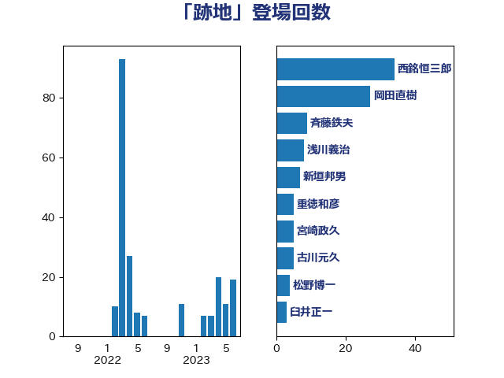

単語「跡地」

| 西銘恒三郎 | 自由民主党 | 34 回 |
| 岡田直樹 | 自由民主党 | 27 回 |
| 斉藤鉄夫 | 公明党 | 9 回 |
| 浅川義治 | 日本維新の会 | 8 回 |
| 新垣邦男 | 立憲民主党 | 7 回 |
| 重徳和彦 | 立憲民主党 | 5 回 |
| 宮崎政久 | 自由民主党 | 5 回 |
| 古川元久 | 国民民主党 | 5 回 |
| 松野博一 | 自由民主党 | 4 回 |
| 臼井正一 | 自由民主党 | 3 回 |
| 福田昭夫 | 立憲民主党 | 3 回 |
| 平林晃 | 公明党 | 3 回 |
| 山崎誠 | 立憲民主党 | 3 回 |
| 山口壯 | 自由民主党 | 3 回 |
| ながえ孝子 | 無所属 | 3 回 |
| 高良鉄美 | 無所属 | 2 回 |
| 金子俊平 | 自由民主党 | 2 回 |
| 矢倉克夫 | 公明党 | 2 回 |
| 河野義博 | 公明党 | 2 回 |
| 比嘉奈津美 | 自由民主党 | 2 回 |
| 橘慶一郎 | 自由民主党 | 2 回 |
| 山谷えり子 | 自由民主党 | 2 回 |
| 中山展宏 | 自由民主党 | 2 回 |
| 黄川田仁志 | 自由民主党 | 1 回 |
| 高橋千鶴子 | 日本共産党 | 1 回 |
| 馬場伸幸 | 日本維新の会 | 1 回 |
| 青木一彦 | 自由民主党 | 1 回 |
| 青山繁晴 | 自由民主党 | 1 回 |
| 金城泰邦 | 公明党 | 1 回 |
| 野田佳彦 | 立憲民主党 | 1 回 |
| 野村哲郎 | 自由民主党 | 1 回 |
| 遠藤良太 | 日本維新の会 | 1 回 |
| 西村明宏 | 自由民主党 | 1 回 |
| 西村康稔 | 自由民主党 | 1 回 |
| 萩生田光一 | 自由民主党 | 1 回 |
| 細田健一 | 自由民主党 | 1 回 |
| 笠井亮 | 日本共産党 | 1 回 |
| 穀田恵二 | 日本共産党 | 1 回 |
| 稲富修二 | 立憲民主党 | 1 回 |
| 石橋通宏 | 立憲民主党 | 1 回 |
| 田村智子 | 日本共産党 | 1 回 |
| 田中健 | 国民民主党 | 1 回 |
| 浮島智子 | 公明党 | 1 回 |
| 柳本顕 | 自由民主党 | 1 回 |
| 松村祥史 | 自由民主党 | 1 回 |
| 松木けんこう | 立憲民主党 | 1 回 |
| 早坂敦 | 日本維新の会 | 1 回 |
| 平山佐知子 | 無所属 | 1 回 |
| 山岸一生 | 立憲民主党 | 1 回 |
| 大西健介 | 立憲民主党 | 1 回 |
| 大塚耕平 | 国民民主党 | 1 回 |
| 古川直季 | 自由民主党 | 1 回 |
| 勝部賢志 | 立憲民主党 | 1 回 |
| 伊波洋一 | 無所属 | 1 回 |
| 中根一幸 | 自由民主党 | 1 回 |
| 三浦靖 | 自由民主党 | 1 回 |
| 三上えり | 立憲民主党 | 1 回 |